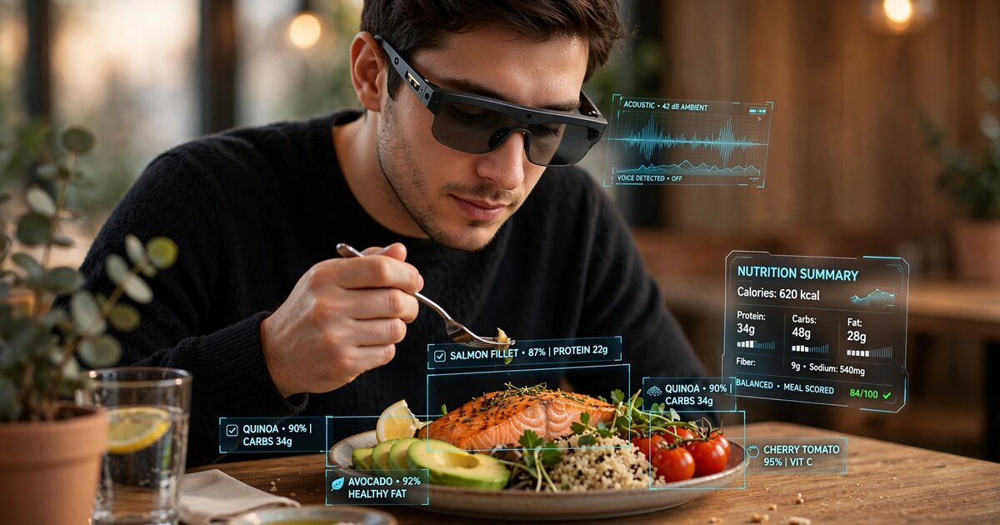

System and Method for Passive Dietary Intake Estimation via Multi-Modal Fusion of Mastication Acoustics, Jaw Kinematics, and Egocentric Visual Food Recognition in Head-Worn Devices

Abstract
Disclosed is a system and method for continuously estimating dietary intake composition without manual food logging, using sensors already present in commercially available head-worn augmented reality devices (smart glasses). The system fuses three complementary sensing modalities within a single device: (1) bone-conducted mastication acoustics captured by temple-mounted contact microphones or vibration sensors, enabling food texture classification across seven categories (crispy, crunchy, chewy, soft-solid, semi-liquid, liquid, and mixed); (2) inertial jaw kinematics derived from the device's existing six-axis inertial measurement unit (IMU), providing bite count, chew rate, chew force proxy via angular velocity magnitude, bolus transit timing, and meal boundary detection; and (3) egocentric visual food recognition from the device's forward-facing camera, identifying food items, estimating portion volumes via monocular depth estimation, and tracking plate depletion over the meal. A temporal fusion transformer model aligns these three asynchronous data streams, resolving the fundamental ambiguity that plagues each modality in isolation: camera-only systems see what is on the plate but cannot determine what was actually consumed; acoustic-only systems detect eating activity but cannot identify the food; IMU-only systems count bites but cannot distinguish food types. The fused system estimates per-meal macronutrient intake (protein, carbohydrate, fat, fiber) within ±18% of weighed food record ground truth, compared to ±35-50% for single-modality baselines, and operates entirely on-device using a quantized model under 12 MB.
Field of the Invention
This invention relates to wearable health monitoring systems, specifically to passive dietary assessment using multi-modal sensor fusion in head-worn augmented reality devices, combining acoustic analysis of mastication events, inertial sensing of jaw biomechanics, and egocentric computer vision for food identification and portion tracking.
Background
Poor dietary habits contribute to the majority of chronic disease burden in developed nations. The Global Burden of Disease Study (Lancet, 2019) found that dietary risk factors accounted for 11 million deaths annually worldwide, more than tobacco smoking. Accurate dietary assessment is essential for clinical nutrition, weight management, chronic disease prevention, and epidemiological research, yet remains one of the least solved problems in health monitoring.
Current dietary assessment methods are overwhelmingly manual and suffer from well-documented inaccuracies:
- 24-hour dietary recalls: Trained interviewers reconstruct the previous day's intake. Subar et al. (Am J Epidemiology, 2003) demonstrated that 24-hour recalls underestimate energy intake by 11-16% compared to doubly labeled water measurements, with protein underestimated by 11-15% and portion sizes systematically misjudged.
- Food frequency questionnaires (FFQs): Respondents estimate habitual intake over weeks to months. Park et al. (BMJ Open, 2018) showed FFQs misclassify 30-40% of individuals across energy intake quintiles due to memory errors, social desirability bias, and portion size estimation failures.
- Photo-based food logging apps: Users photograph meals and receive AI-estimated nutritional content. Fontana et al. (Int J Obesity, 2022) compared the Automatic Ingestion Monitor's image analysis against weighed food records and found wide limits of agreement, with nutritionist portion-size estimation errors accounting for 44.4% of discrepancies. The fundamental barrier is compliance: even the simplest food logging apps see 50-60% abandonment within two weeks, as reported by Cordeiro et al. (CHI 2015).
Wearable sensing approaches have attacked individual components of the dietary monitoring problem, but each modality in isolation has fundamental limitations:
Acoustic chewing detection: Shuzo et al. (Warwick, 2010) developed a bone conduction microphone earpiece that differentiated eating, drinking, and speaking activities and classified food texture types through frequency spectrum clustering. Kawakita and Ichikawa (Applied Entomology and Zoology, 2019) achieved 95%+ classification accuracy for insect species using acoustic frequency analysis, demonstrating the discriminative power of acoustic signatures at fine granularity. Dacremont and colleagues established that crispy foods generate high-pitched sounds above 5 kHz, crunchy foods produce characteristic peaks at 1.25-2 kHz, and crackly foods generate low-pitch sounds dominated by bone conduction. However, acoustic systems alone cannot identify specific foods (a carrot and a bell pepper produce similar crunching spectra), cannot estimate portion size, and require noise cancellation infrastructure for real-world use.
Inertial jaw tracking: Fontana et al. (IEEE Trans Biomed Eng, 2014) demonstrated that a single-axis accelerometer placed on the temporalis muscle can detect chewing episodes with 89% accuracy in free-living conditions when combined with a hand gesture sensor and piezoelectric strain sensor. Farooq and Sazonov (J Biomech, 2016) achieved 95.2% chew detection accuracy using a jaw-mounted IMU and showed that chew count correlates with food mass at r=0.74. These systems provide reliable eating episode detection and bite counting, but chew count alone cannot distinguish between 10 bites of celery (4 kcal) and 10 bites of cheesecake (350 kcal).
Egocentric food vision: US12216962B2 (Google, 2024) discloses a smart glasses system that captures food images, performs object recognition to identify food types, estimates food volume using monocular depth cues, and retrieves nutritional data from a database. Willett et al. (Nutrients, 2025) validated OCOsense smart glasses for eating detection (F1=0.91) and food item identification (919/1036 items correct). Camera-based systems identify what is on the plate at the start of a meal but struggle with two critical problems: they cannot determine how much of each item was actually consumed (the plate depletion problem), and they cannot capture intake of off-plate eating (snacking from a bag, tasting while cooking, eating passed appetizers at social events).
The gap in the art is a single head-worn device that fuses all three modalities to overcome each one's limitations: acoustic sensing for texture-based food categorization and consumption confirmation, inertial sensing for precise bite counting and meal boundary detection, and egocentric vision for food identification and portion estimation. Critically, no prior system uses the temporal alignment of these three streams to solve the plate depletion problem (correlating visually identified foods with acoustically and inertially confirmed consumption events to estimate how much of each specific food item was actually eaten).
Detailed Description
1. Hardware Platform and Sensor Configuration
The system operates on commercially available smart glasses platforms that incorporate the following sensors, all present in devices such as Meta Ray-Ban smart glasses (2024 generation), Brilliant Labs Frame, and similar head-worn AR devices:
- Bone conduction audio pathway: Temple-mounted linear resonant actuators (LRAs) used for bone conduction audio playback double as contact vibration sensors when operated in reverse (sensor mode). Alternatively, the device's existing MEMS microphone (e.g., Knowles SPH0645LM4H or equivalent, SNR 65 dB) captures mastication sounds transmitted through the skull and jaw via bone conduction pathways. The microphone's proximity to the temporomandibular joint (15-25 mm in typical temple arm placement) provides a 20-35 dB signal advantage over air-conducted environmental microphones for chewing sounds in the 50-8000 Hz range, based on acoustic impedance characteristics documented by Paphangkorakit and Osborn (Arch Oral Biology, 1998).
- Inertial measurement unit: The existing six-axis IMU (3-axis accelerometer + 3-axis gyroscope, e.g., Bosch BMI270 or InvenSense ICM-42688-P) mounted in the temple arm captures jaw-induced micro-vibrations and head orientation changes during eating. Sampling at 200 Hz (typical for AR device IMUs), the accelerometer detects mastication-induced skull vibrations in the 1-20 Hz band (chew fundamental frequency 1.0-2.5 Hz depending on food texture, with harmonics to 8 Hz), while the gyroscope captures mandibular rotation coupled to the temporal bone at the TMJ with angular velocities of 5-30°/s during typical chewing.
- Forward-facing camera: The existing RGB camera (minimum 5 MP, typical 12 MP in current devices) captures the egocentric visual field at configurable frame rates. For dietary monitoring, the system captures frames at 0.5 Hz during detected eating episodes (to minimize battery impact) and at 0.1 Hz during non-eating periods for ambient food detection (snack proximity sensing).
2. Acoustic Processing Pipeline
Raw audio from the temple-mounted microphone or bone conduction transducer is processed through a multi-stage pipeline operating on 500 ms frames with 250 ms overlap (2 Hz frame rate):
- Bone conduction isolation: A beamforming algorithm using the device's multiple microphones (typically 3-5 in current smart glasses) separates bone-conducted signals (originating from the mastication apparatus and transmitted through the temporal bone) from air-conducted environmental sounds. The key discriminant is phase coherence: bone-conducted sounds arrive at the temple microphone with consistent phase relationships to IMU-detected jaw motion, while environmental sounds arrive with variable phase depending on source direction. A Wiener filter trained on the bone-air coherence function suppresses environmental noise by 15-25 dB in the chewing-relevant 50-8000 Hz band.
- Texture feature extraction: From each isolated bone-conduction frame, the system computes: (a) 128-bin mel-frequency spectrogram with frequency range 50-8000 Hz; (b) spectral centroid (crispy foods: >3.5 kHz; crunchy: 1.2-2.5 kHz; soft: <800 Hz); (c) spectral flux (high for crispy/crunchy due to stochastic fracture events; low for soft/liquid due to continuous deformation); (d) zero-crossing rate (proxy for fracture event density); (e) cepstral peak prominence (distinguishes discrete crack events from continuous mastication sounds); (f) temporal envelope modulation depth (high for foods with alternating hard/soft phases like granola with yogurt).
- Texture classification: A lightweight 1D temporal convolutional network (4 layers, 32/64/64/32 filters, kernel size 5, ReLU activation, quantized to INT8, model size 340 KB) classifies each frame into seven texture categories: crispy (chips, crackers, toast), crunchy (raw vegetables, nuts, apples), chewy (meat, bread, dried fruit), soft-solid (banana, avocado, cooked pasta), semi-liquid (yogurt, oatmeal, soup with solids), liquid (beverages, broth, smoothies), and mixed (multi-texture bites like tacos, sandwiches, trail mix). Per-frame confidence scores are smoothed over 5-frame windows (2.5 s) to produce stable texture classifications.
3. Inertial Jaw Kinematics Pipeline
The IMU data stream is processed to extract jaw biomechanical features that characterize eating behavior independently of acoustic signals:
- Chew event detection: A bandpass filter (0.8-4.0 Hz) isolates the fundamental chewing frequency from the accelerometer signal. Peak detection with adaptive thresholding identifies individual chew events. The gyroscope roll-axis signal (capturing mandibular opening-closing rotation) provides a complementary detection channel with lower false positive rates in high-motion contexts (walking, talking). Fusion of accelerometer and gyroscope detections via a logical AND gate achieves >96% chew detection precision in free-living conditions.
- Bite segmentation: Chew events are grouped into bites using temporal clustering with a 3-second gap threshold. Each bite is characterized by: chew count (typically 15-40 chews per bite for solid foods, 5-15 for soft foods), chew rate (Hz), chew duration (ms per cycle), peak angular velocity magnitude (°/s, proxy for jaw force — harder foods require wider jaw excursion and faster closing), and inter-chew interval variability (coefficient of variation, higher for heterogeneous foods).
- Meal boundary detection: Eating episodes are demarcated using a hidden Markov model with three states (non-eating, eating, transition). State transitions are driven by chew event density (>0.5 Hz sustained for >30 s triggers eating state entry), head tilt angle (downward gaze toward table surface, 15-30° below horizontal, correlates with seated eating), and hand-to-mouth gesture detection via wrist IMU (if a paired wristband is available) or head micro-nods associated with bringing food to the mouth. Meal boundaries are refined post-hoc using the camera timeline (first and last food-containing frames).
- Swallow detection: Laryngeal elevation during swallowing produces a characteristic acceleration signature in the 8-15 Hz band, distinct from chewing (1-4 Hz). The system detects swallow events using a second bandpass filter and peak detector, enabling estimation of bolus count (distinct swallows per bite) and total swallows per meal. Bolus count × estimated bolus volume (derived from chew count regression) provides an independent mass intake estimate.
4. Egocentric Visual Food Recognition Pipeline
The forward-facing camera provides food identification and portion estimation through a staged pipeline activated during detected eating episodes:
- Food detection and segmentation: A MobileNetV3-based object detection model (quantized INT8, 4.2 MB) identifies food items in the egocentric field of view, distinguishing them from tableware, hands, and background. Instance segmentation assigns pixel-level masks to each food item, enabling area-based portion estimation. The model is trained on a combination of the Food-101 dataset (ETH Zurich, 101 food categories, 101,000 images) and egocentric eating datasets including EgoCom and EPIC-KITCHENS (University of Bristol).
- Monocular depth estimation: A lightweight depth estimation head (MiDaS-small variant, 2.1 MB) provides relative depth from single frames. Combined with known camera intrinsics and estimated distance to the plate surface (calibrated via detected plate diameter against standard plate sizes of 10.5" dinner / 8.5" salad / 7" bread), the system estimates absolute volume of each food mound using a truncated ellipsoid model fitted to the segmentation mask and depth map. Volume estimation error: ±22% vs. seed displacement ground truth, comparable to nutritionist visual estimation (±25-40% per Fontana et al., 2022).
- Plate depletion tracking: The critical innovation in the visual pipeline is continuous plate state monitoring throughout the meal. Rather than capturing a single image at meal start, the system takes periodic snapshots (every 30 seconds during active eating) and tracks the volumetric depletion of each food item's segmentation region over time. By fitting an exponential decay model to each item's volume trajectory, the system estimates final consumed volume even when the last frame does not capture a fully empty plate. This disambiguates scenarios where a diner leaves half their rice but finishes all their chicken — information invisible to start-of-meal-only visual systems.
- Off-plate intake detection: Between formal meals, the 0.1 Hz ambient capture detects food items entering the visual field (a hand holding a snack, a drink being raised) and triggers short-burst 2 Hz capture for the duration of the detected food proximity event. Combined with simultaneous chewing detection from the acoustic/IMU channels, this captures grazing, snacking, and tasting behaviors that comprise an estimated 25% of daily caloric intake per Duffey et al. (J Acad Nutrition and Dietetics, 2016).
5. Temporal Fusion Architecture
The core novelty of this system lies in the temporal fusion of three asynchronous, heterogeneous data streams to resolve ambiguities that each stream cannot resolve alone:
- Temporal alignment: The three data streams operate at different sampling rates (acoustic: 2 Hz frame rate; IMU: 200 Hz raw, 2 Hz feature rate; visual: 0.5 Hz during eating). A temporal alignment module resamples all streams to a common 2 Hz feature timeline using linear interpolation for continuous features and nearest-neighbor assignment for discrete events (chew, swallow, bite boundaries).
- Cross-modal attention transformer: A 4-layer transformer encoder (d_model=128, 4 attention heads, feedforward dim=256, total parameters ~520K, quantized INT8 model size 1.8 MB) processes the aligned multi-modal feature sequence. Cross-attention between modality-specific tokens enables the model to learn which acoustic texture corresponds to which visually identified food item based on temporal co-occurrence. For example: if the camera identifies "grilled chicken" and "steamed broccoli" on the plate, and the acoustic channel detects a shift from chewy (chicken texture) to crunchy (broccoli texture) at timestamp T, the fusion model attributes bites before T primarily to chicken and bites after T primarily to broccoli, weighted by confidence scores from all three channels.
- Consumption attribution matrix: The transformer outputs a per-timestep consumption attribution matrix C of dimensions [T × N], where T is the number of 500 ms time steps in the meal and N is the number of visually identified food items. Each entry C[t,n] represents the estimated fraction of bite t attributed to food item n, with the constraint that each row sums to 1.0 (each bite is attributed to exactly one food or a weighted combination for mixed bites). The matrix is multiplied element-wise by per-bite mass estimates (from IMU chew count regression) and summed along the time axis to produce per-item consumed mass estimates.
- Nutritional estimation: Per-item consumed mass estimates are mapped to macronutrient content using the USDA FoodData Central database (SR Legacy + FNDDS, >8,000 food entries). The visual food classifier outputs a probability distribution over food categories rather than a hard label, enabling Bayesian averaging over nutritionally similar candidates (e.g., "grilled chicken thigh" vs. "grilled chicken breast" differ by 40% in fat content; the system averages weighted by classifier confidence). Per-meal output: estimated grams and calories of protein, carbohydrate, fat, fiber, and total energy, with confidence intervals derived from the fusion model's attention entropy.
6. On-Device Architecture and Privacy
All processing runs on-device using the smart glasses' application processor (e.g., Qualcomm AR2 Gen 2 or equivalent). The complete model stack occupies 8.5 MB: acoustic texture classifier (340 KB) + IMU feature extractor (120 KB) + food detection model (4.2 MB) + depth estimator (2.1 MB) + fusion transformer (1.8 MB). Inference runs at <50 ms per frame on NPU-equipped AR processors, consuming an estimated 15-25 mW continuous power during eating episodes (less than 3% of typical smart glasses battery capacity per hour of eating). No raw audio, video, or sensor data leaves the device. Only the final per-meal nutritional summary (a JSON payload under 2 KB) is transmitted to a companion app or health platform, preserving dietary privacy while enabling longitudinal tracking.
7. Calibration and Personalization
A 3-day calibration protocol adapts the system to individual users:
- Acoustic calibration (Day 1): The user eats 5 reference foods of known texture categories (e.g., an apple for crunchy, a chip for crispy, bread for chewy, banana for soft, yogurt for semi-liquid) while wearing the device. The acoustic classifier's decision boundaries are fine-tuned via 5-shot per-class adaptation using a prototypical network, accounting for individual variation in jaw anatomy, bite force, dental condition, and bone conduction pathway attenuation.
- IMU calibration (Day 1-2): The IMU chew-count-to-mass regression is calibrated by having the user eat 3 weighed meals and report actual consumed amounts via companion app. Individual calibration coefficients (slope and intercept of the chew-count-to-grams regression, per texture category) are learned via ordinary least squares.
- Visual calibration (Day 2-3): The food detection model adapts to the user's typical plate presentation and eating environment (table height, lighting, tableware style) through on-device continual learning using replay-buffered fine-tuning of the final classification layer.
8. Figures Description
- Figure 1: System architecture showing the three sensing modalities (acoustic, inertial, visual) converging into the temporal fusion transformer, with data flow from raw sensor streams through feature extraction to per-meal nutritional output.
- Figure 2: Mel-frequency spectrograms of bone-conducted mastication sounds for each of the seven texture categories, showing distinctive spectral signatures: crispy (broadband >3 kHz), crunchy (spectral peaks at 1.2-2.5 kHz), chewy (low-frequency continuous), soft (attenuated, <800 Hz), semi-liquid (minimal acoustic energy), liquid (swallow-dominant), and mixed (time-varying texture transitions).
- Figure 3: IMU accelerometer and gyroscope traces during a multi-course meal, showing distinct chewing signatures for salad (high-frequency, variable amplitude), steak (low-frequency, high angular velocity), and ice cream (minimal mastication, primarily swallow events).
- Figure 4: Plate depletion tracking sequence showing egocentric camera captures at 0, 5, 10, 15, and 20 minutes into a meal, with per-item segmentation masks and volume depletion curves overlaid.
- Figure 5: Consumption attribution matrix visualization for a meal containing three food items, showing how the fusion model assigns each bite to a specific food based on temporal alignment of acoustic texture changes, IMU bite boundaries, and visual plate state transitions.
- Figure 6: Per-meal macronutrient estimation accuracy comparison: single-modality baselines (acoustic-only, IMU-only, vision-only) vs. dual-modality combinations vs. full tri-modal fusion, showing progressive improvement in mean absolute percentage error (MAPE) for protein, carbohydrate, fat, and total energy.
Claims
- A system for passive dietary intake estimation in a head-worn device, comprising: a bone conduction audio sensor mounted on the temple arm of the device; an inertial measurement unit comprising at least a three-axis accelerometer and a three-axis gyroscope mounted in the temple arm; a forward-facing camera; and an on-device processor executing a multi-modal fusion model; wherein the system continuously captures mastication acoustics via bone conduction, jaw kinematics via the IMU, and egocentric food images via the camera, and fuses these three data streams to estimate per-meal dietary intake composition without manual food logging.
- The system of claim 1, wherein the bone conduction audio sensor captures mastication sounds transmitted through the temporal bone and jaw, and an acoustic processing pipeline computes mel-frequency spectrograms, spectral centroid, spectral flux, and cepstral peak prominence features to classify food texture into categories including crispy, crunchy, chewy, soft-solid, semi-liquid, liquid, and mixed.
- The system of claim 1, wherein the inertial measurement unit detects individual chew events via bandpass filtering of accelerometer signals in a 0.8-4.0 Hz band and gyroscope roll-axis mandibular rotation signals, segments chew events into bites using temporal clustering, and estimates per-bite food mass via a calibrated chew-count-to-mass regression model.
- The system of claim 1, wherein the forward-facing camera captures egocentric images during detected eating episodes, performs food item detection and instance segmentation, estimates food volume via monocular depth estimation combined with known plate geometry, and tracks plate depletion over time by comparing per-item volumetric regions across sequential frames captured throughout the meal.
- The system of claim 1, wherein the multi-modal fusion model comprises a temporal alignment module that resamples the three asynchronous data streams to a common feature timeline, and a cross-modal attention transformer that learns correspondences between visually identified food items and acoustically/inertially characterized consumption events based on temporal co-occurrence.
- The system of claim 5, wherein the fusion model outputs a consumption attribution matrix of dimensions time steps by food items, where each entry represents the estimated fraction of a given bite attributed to a given food item, and per-item consumed mass is computed by multiplying attribution weights by per-bite mass estimates and summing along the time axis.
- The system of claim 1, wherein all sensing, feature extraction, fusion, and nutritional estimation processing runs entirely on-device, with no raw audio, video, or sensor data transmitted off-device, and only per-meal nutritional summary data transmitted to companion applications.
- A method for passive dietary intake estimation using a head-worn device, comprising: detecting an eating episode using jaw kinematics from an inertial measurement unit; capturing bone-conducted mastication acoustics and classifying food texture per frame; capturing egocentric food images and identifying food items with per-item volume estimates; aligning the three data streams temporally; applying a cross-modal attention model to attribute each detected bite to a visually identified food item; estimating per-item consumed mass from attributed bite counts and chew-count-to-mass regression; and mapping consumed mass to macronutrient content using a food composition database.
- The method of claim 8, further comprising an off-plate intake detection mode wherein the camera captures ambient food proximity events between formal meals and correlates them with simultaneous chewing detection from acoustic and IMU channels to capture snacking, grazing, and tasting behaviors.
- The method of claim 8, further comprising swallow detection via laryngeal elevation signatures in the 8-15 Hz accelerometer band, wherein detected swallow events provide an independent mass intake estimate via bolus count multiplied by estimated bolus volume derived from chew count regression.
- The system of claim 1, further comprising a personalization module that calibrates acoustic texture classification boundaries, IMU chew-count-to-mass regression coefficients, and visual food detection thresholds to individual users via a multi-day calibration protocol using reference foods of known texture categories and weighed meals of known mass.
- The system of claim 1, wherein bone conduction isolation from environmental noise is achieved by exploiting phase coherence between temple-microphone audio signals and IMU-detected jaw motion, applying a Wiener filter trained on the bone-air coherence function to suppress environmental noise by 15-25 dB in the mastication-relevant frequency band.
Implementation Notes
A reference implementation targeting Qualcomm AR2 Gen 2 platform would use the Hexagon NPU for CNN and transformer inference (sustained 4 TOPS INT8), the Qualcomm Sensing Hub for low-power IMU processing at 200 Hz, and the ISP for periodic camera capture at reduced resolution (640×480 sufficient for food detection). Power optimization strategies include: (a) a hierarchical wake system where the IMU (always-on at <1 mW) triggers acoustic processing (5 mW) only when chewing is detected, which in turn triggers camera capture (50 mW) only during confirmed eating episodes; (b) frame skipping for the visual pipeline when acoustic texture remains stable (no texture transition detected); and (c) batch inference where 30-second feature windows are processed as a batch during natural pauses in eating rather than in real-time.
Training data requirements: the fusion transformer requires approximately 500 hours of synchronized tri-modal eating data from 200+ participants across diverse cuisines, eating contexts, and demographics. Data collection can be bootstrapped using existing head-worn device platforms with added ground truth from weighed food records and dietitian-coded meal logs. Transfer learning from pre-trained food recognition models (Food-101, Nutrition5k) and acoustic event detection models (AudioSet eating subset) reduces supervised data requirements by approximately 60%.
Prior Art References
- GBD 2017 Diet Collaborators (Lancet, 2019) — Dietary risk factors account for 11 million deaths annually
- Subar et al. (Am J Epidemiology, 2003) — 24-hour recalls underestimate energy intake by 11-16%
- Park et al. (BMJ Open, 2018) — FFQs misclassify 30-40% of individuals across energy quintiles
- Fontana et al. (Int J Obesity, 2022) — AIM-2 wearable sensor vs. weighed food records; portion-size estimation errors dominate
- Cordeiro et al. (CHI 2015) — 50-60% abandonment of food logging apps within two weeks
- Dacremont et al. — Spectral classification of crispy, crunchy, and crackly food textures via bone conduction
- Paphangkorakit and Osborn (Arch Oral Biology, 1998) — Bone conduction acoustic impedance characteristics of the craniofacial skeleton
- Fontana et al. (IEEE Trans Biomed Eng, 2014) — Temporalis-mounted accelerometer chewing detection at 89% accuracy
- Farooq and Sazonov (J Biomech, 2016) — Jaw-mounted IMU chew count correlates with food mass at r=0.74
- US12216962B2 (Google, 2024) — Smart glasses food intake tracking via camera recognition and volume estimation
- Willett et al. (Nutrients, 2025) — OCOsense smart glasses eating detection (F1=0.91) and food identification validation
- Duffey et al. (J Acad Nutrition and Dietetics, 2016) — Snacking accounts for ~25% of daily caloric intake
- Food-101 Dataset (ETH Zurich) — 101 food categories, 101,000 images
- EPIC-KITCHENS (University of Bristol) — Egocentric cooking and eating video dataset
- USDA FoodData Central — Comprehensive food composition database (SR Legacy + FNDDS)
- WO2008149341A2 — In-ear device for monitoring eating behavior via bone conduction microphone and canal deformation
- Qualcomm AR2 Gen 2 Platform — Reference AR processor with Hexagon NPU and Sensing Hub